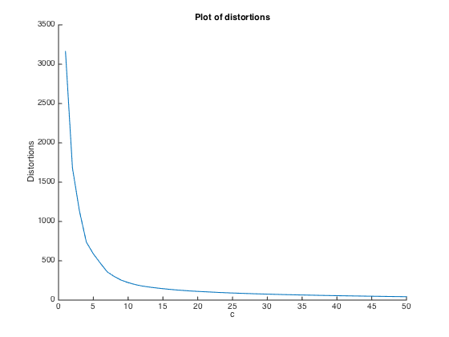
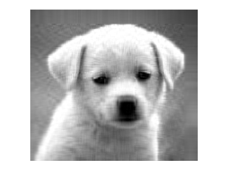

Part B
clear; close all;
load('puppy.mat');
m = size(puppy,1);
n = size(puppy,2);
[U,S,V] = svd(puppy,'econ');
for c = 1:50
Uc = U(:,1:c);
Sc = S(1:c,1:c);
Vc = V(:,1:c);
Ac = Uc*Sc*Vc';
sum = 0;
for i = 1:m
for j = 1:n
sum = sum + abs(puppy(i,j) - Ac(i,j))^2;
end
end
dst(c) = sum;
end
figure; hold
plot(dst);
title('Plot of distortions');
xlabel('c');
ylabel('Distortions');
opt = max(dst(find(dst < 100)));
disp(['The smallest c which results in a distortion less than 100 is 23']);
figure;
imshow(U(:,1:23)*S(1:23,1:23)*V(:,1:23)');
Current plot held
The smallest c which results in a distortion less than 100 is 23
 